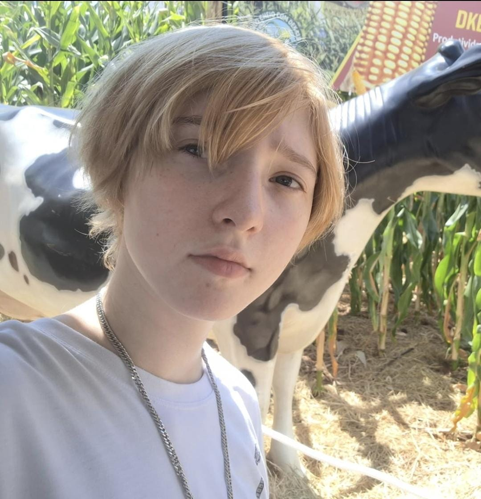
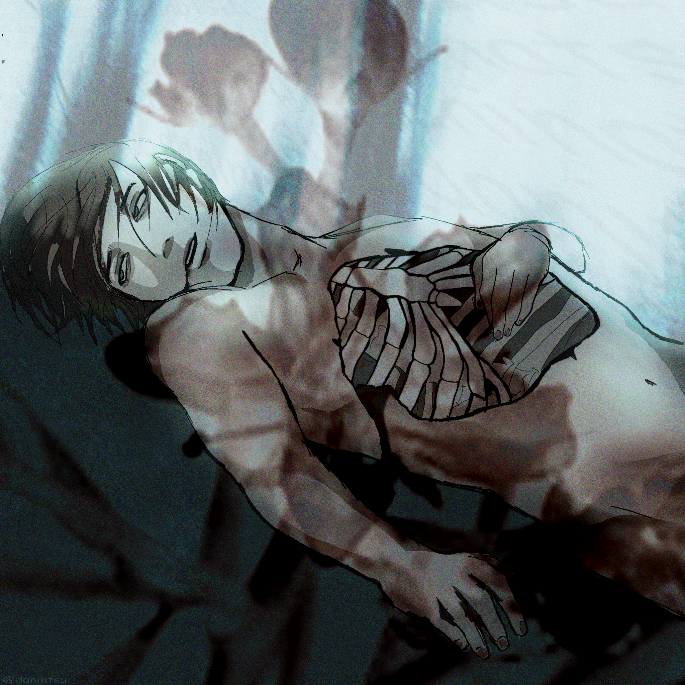
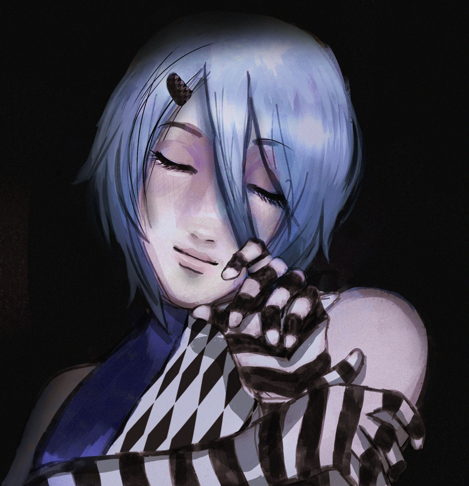
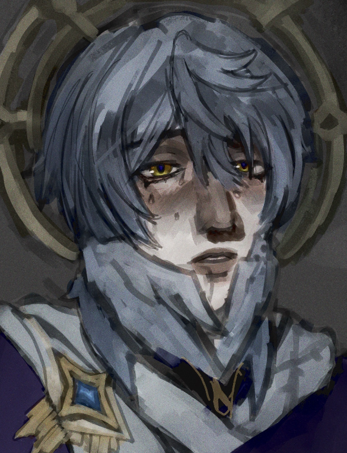
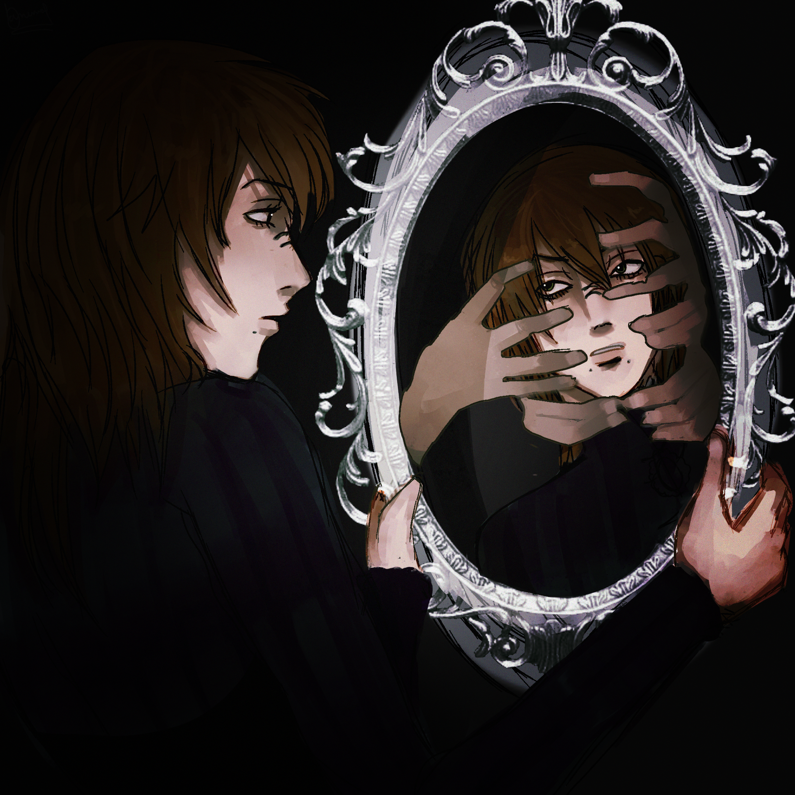
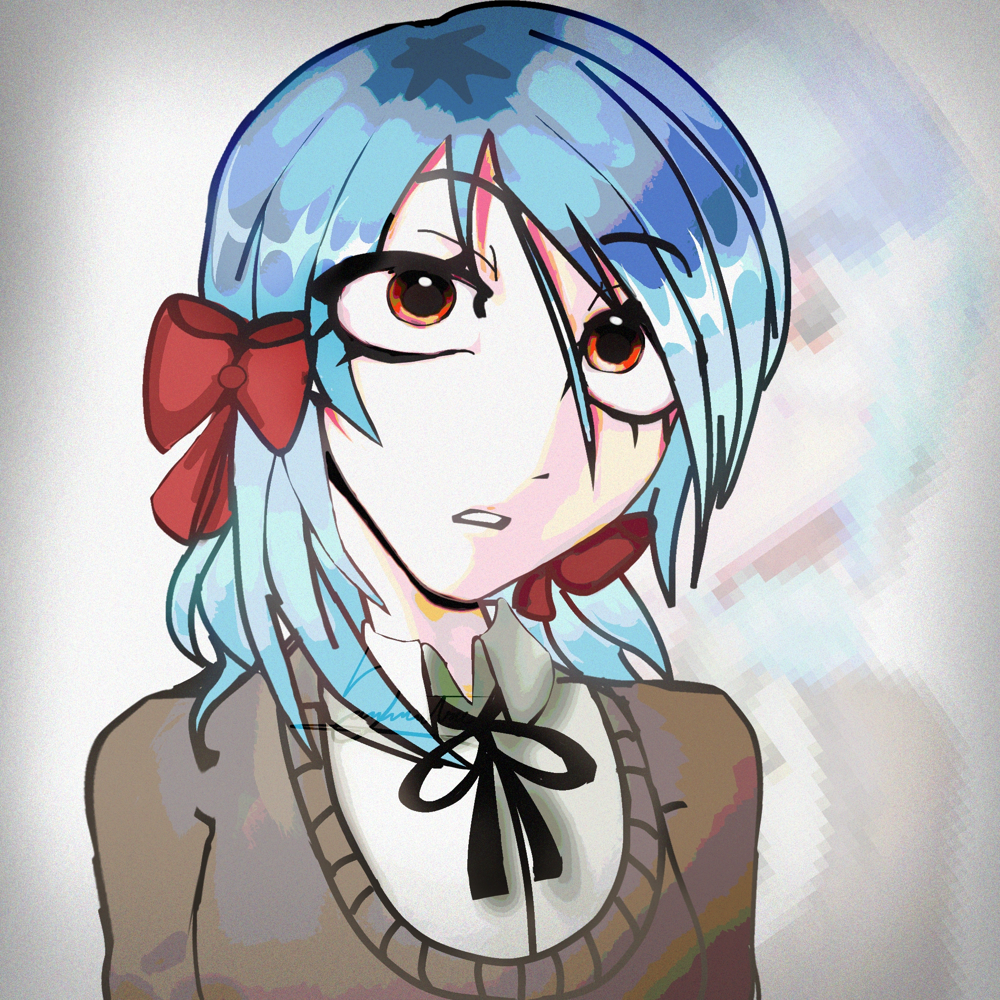
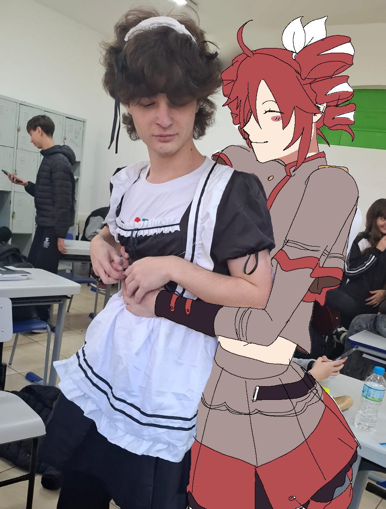

Olá! Esse é um site que eu já havia criado para projetos pessoais, mas decidi usar-lo para a atividade TRAB01 - Trabalho Exploratório de DW 1. O site tem como tema principal eu me introduzir para o leitor, mostrar a minha vida e mostrar ao mundo o meu hobby fazer arte!!

Meu nome é Maria Hermann, eu tenho 15 anos e como já deve ter percebido, eu gosto de coisas BEM animadas, música, desenhos, mas arte no geral!! Eu gosto de fazer várias coisas no meu tempo livre, como criar um site para mim (por isso eu já tinha a estrutura pronta...), desenhar, ouvir música, ler, e conversar com meus amigos. Sou fluente em inglês, e isso ajudou muito na minha vida, especialmente na área de informática, onde é necessário ter conhecimento de inglês básico para começar. Esse site tem como principal objetivo mostrar as pessoas a minha arte e como eu me expresso!
--------------------------------------------------------------------------------------------------------

Estes são quem me acompanharam durante toda minha jornada dentro do IFC, meus amigos que sempre me ajudam e me dão o apoio que eu preciso pra continuar com os meus sonhos! Eu sempre agradeço por ter amigos tão bons assim, e foi uma benção ter eles na minha vida! Eu não poderia querer mais.
--------------------------------------------------------------------------------------------------------
Eu gosto de desenhar personagens em um estilo semi-realisticos, sempre focando em parecer o mais humano possível. Eu geralmente expresso e também exploro meus próprios sentimentos dentro das minhas artes como a solidão, a tristeza, a imagem própria, a serenidade, e entre outros sentimentos que todos sentem.






--------------------------------------------------------------------------------------------------------
...mas eu também gosto de desenhar em estilo de desenhos animados, ou de cartoon! É uma ótima foema de descontrair quando se está muito cansado, pois não precisa focar no desenho estar perfeito, mas sim na experiência de desenhar.


